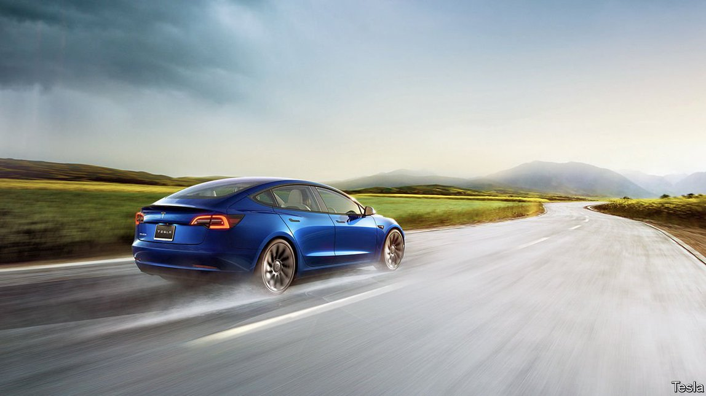
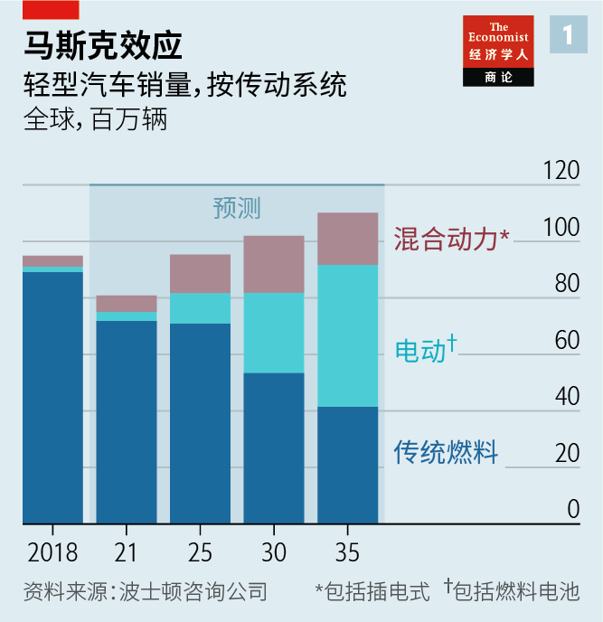
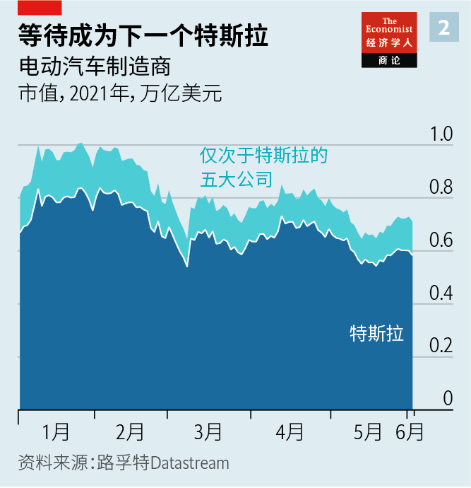
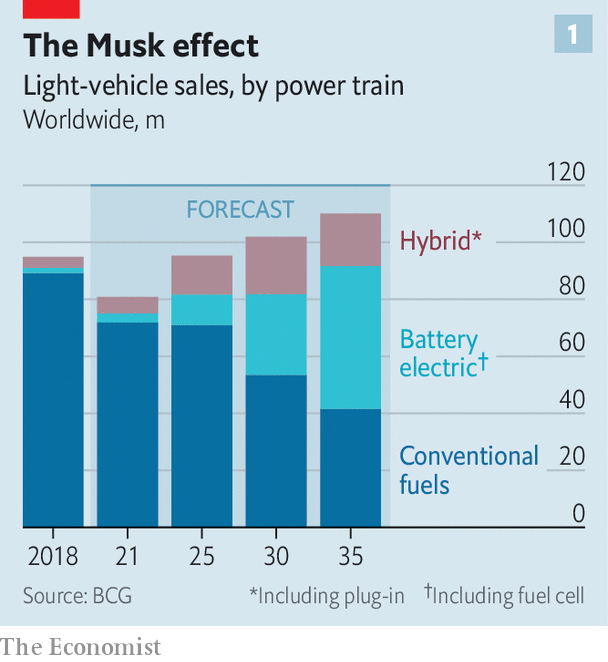
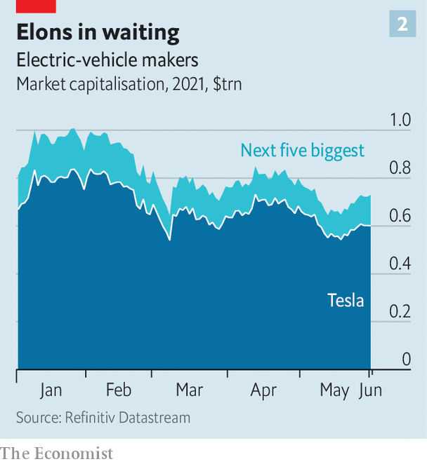

2021-06-17T14:54:08+00:00
新势力触电
如何成为下一个特斯拉
蜂拥而至的造车新势力争相跟随马斯克。有谁能突围吗？
在汽车制造业里已经有大量品牌不复存在，比如迪亚托（Diatto）、Hupmobile、美世（Mercer）和惠特洛克（Whitlock），等等。美国到1910年代已经诞生了大约250家汽车制造商。到了20世纪末，其中三家变得举足轻重：福特、通用汽车和克莱斯勒。过去几年里，电动汽车在全球范围的蓬勃发展再现了当年美国汽车产业的繁荣景象。
爱驰、理想、蔚来、威马和小鹏等中国创业公司已经在以数万台的年产量制造电动汽车。在欧洲，克罗地亚的Rimac和西班牙的Hispano Suiza正在打造电动超级跑车，而英国的Arrival正在制造电动货车。Canoo、Fisker、Lordstown、Lucid和Rivian等美国公司希望很快开始全面投产。台湾代工厂富士康更出名的业务是为苹果生产iPhone，它可能很快也会为其他公司组装电动汽车。至于苹果，它的下一个产品可能就是iCar。
目前，大多数新崛起的电动车制造商都在亏损。有些还没挣到一分钱。但在这个已经确定向电力驱动转型的行业（见图表1），所有这些公司都看到了从中分得一杯羹的机会。每一家都想成为下一个特斯拉。特斯拉已经使用电池和智能软件成功向内燃机发起宣战。在此过程中，马斯克的公司成为了世界上最有价值的车厂，市值超过了排在它之后的三大汽车制造商的总和。
咨询公司e&Co的恩格尔贝特·维默尔（Engelbert Wimmer）表示，特斯拉高达6000亿美元的估值就像“领头的火炬”。现在，投资者正在寻找下一个灯塔。2018年，蔚来在纽约上市。小鹏和理想也在去年跟上。这些公司的市值都与许多老牌汽车制造商相当，甚至更高。Arrival和几家美国公司已经通过与特殊目的收购公司（SPAC）合并这条捷径成功上市，市值以几十亿美元计。投资银行林肯国际（Lincoln International）的帕特里克·冯·赫兹（Patrick von Herz）称这是“全球性的疯狂竞争”。小鹏的老板何晓鹏表示，他预计电动车厂商会增加到300家左右，然后稳定在十来家。这些挑战者该如何避免被遗忘的命运?
要想存活下来需要具备三个基本要素。首先，新势力必须找到一个能作为扩张起点的利基市场。然后，它们需要真正地量产汽车。最后，它们必须创建一个销售和分销网络。大多数公司会在这其中的一步或多步上失利。讽刺的是，最有可能像特斯拉一样成功的可能是那些看起来最不像特斯拉的公司。
首先是选择战场。它可能是地理意义上的。另一家投资银行杰富瑞（Jefferies）的菲利普·霍乔斯（Philippe Houchois）认为，下一个特斯拉将诞生于中国。消费者对新技术的渴望以及政府对电气化的大力支持让中国的造车新势力抢占了先机。蔚来是其中最大的一家，它在2020年生产了4.4万辆车，目前市值690亿美元。小鹏和理想的市值也相当可观，分别为280亿美元和220亿美元。强大的融资能力帮助它们赢得在国内外扩张所需的资金。小鹏已经开始把汽车卖到了挪威这个欧洲最热衷购买电动汽车的国家。蔚来也即将进入挪威市场。
比地理市场更重要的是选对细分市场。特斯拉并不是第一家电动汽车制造商，却是第一家生产昂贵的大型豪华电动汽车的厂商，这样就可以消化高昂的电池成本。许多新公司也瞄准了利润最丰厚的豪华SUV和轿车。但随着大众旗下的奥迪和保时捷以及梅赛德斯等老牌汽车制造商入局，竞争正在升温。4月，有志于全球扩张的中国公司吉利推出了一款名为Zeekr的豪华电动车型。与此同时，大众市场也差不多热闹，通用汽车和福特最近都已宣布要大举押注电动车。
因此，其他细分市场可能是更好的选择。轻型商用车市场便是其中之一，新冠疫情带来的电子商务热潮加大了对这类车型的需求。咨询公司Interact Analysis的阿拉斯泰尔·海菲尔德（Alastair Hayfield）认为，运货车领域“还没有出现特斯拉”。汽车制造商目前不过是在现有车型中加上了电动汽车传动系统——这样的折中方案影响性能，并不能令人满意。这给Arrival和Rivian等公司提供了机遇。另一个或许有利可图的细分市场是超级跑车。富有的汽油车发烧友们似乎愿意花200来万美元添置一台新玩具。Rimac和意大利的Pininfarina也将这些汽车看作向其他车厂出售电动汽车技术的试验台。中国的Silk-FAW合资企业将它开发的红旗S9混合动力超跑视为进入大众市场的途径。
然而，找对细分市场可能还不够。小鹏的总裁顾宏地承认，新企业必须提供某些真正与众不同的东西。Lucid的CEO彼得·罗林森（Peter Rawlinson）说，多年来，传统汽车公司在技术上一直古板守旧，“没有意识到这是一场技术竞赛” 。随着汽车变得越来越像个人电子设备，企业将自身首先定位为科技公司、其次才是汽车制造商可能会带来一种优势。富士康的董事长刘扬伟认为，未来的驾驶体验将“由软件驱动，由软件定义”。
在投资者看来，创新的知识产权是张“闪亮的名片”，咨询公司高德纳的佩德罗·帕切科（Pedro Pacheco）说。但是，像许多中国的特斯拉模仿者在做的那样，只在普通电动汽车上安装上大尺寸触摸屏是不够的。由特斯拉首创的OTA软件更新、专有充电网络和网络直销现在都被看作是入场筹码。
因此，新来者都想方设法在这个行业打上自己的技术印记。Lucid的技术人员已经将自己的电池续航里程提高到517英里（832公里）。蔚来提供三分钟换电池服务，以求消除那些无法在家中充电的中国车主的后顾之忧。小鹏声称自己拥有业内最先进的语音控制系统。Fisker和Canoo提供的订阅服务让人们无需买车就能用车。
这些功能哪些值得拥有、哪些只是噱头，最终还是消费者说了算。但这也得在新车型生产和销售之后才有定论。一年生产几千辆车已经够难了（虽然这么搞赔钱倒是很容易）。真能把几十万辆车卖出去还赚到钱又完全是另一回事了。“生产地狱”差点让特斯拉倒闭。有了酷炫领先的软件，还得有大型压铸机、油漆车间和装配线作为后盾。因此，经纪公司盛博表示，制造一辆电动车在许多方面与制造汽油车没有太大区别，而且成本也不会更低。专门建造一家年产10万辆左右的新工厂至少要砸10亿美元。
一些挑战者选择改造老工厂来减轻成本压力，比如特斯拉就低价买下了位于加州弗里蒙（Fremont）的一家废弃工厂。Rivian搬进了伊利诺斯州一座原属于三菱的老工厂。其他新来者正在与老牌企业合作，后者在维护漫长且复杂的供应链方面很有经验。百度已与吉利联手，而华为与吉利的国内竞争对手北汽、长安和广汽结盟。Fisker和蔚来都在走借助代工厂的轻资产路线，这类代工厂过去为大车厂生产小批量车或带有折叠式敞篷车顶等复杂功能的汽车。
Arrival的方法可能最为创新。在特斯拉和其他公司朝着“巨型”走时，这家英国公司却打出了“微型”旗号。由于商用车不像乘用车那样需要考虑造型或做定制化，它省掉了复合面板“单元”组装的生产线。这可以在购买加改造成本仅在四五千万美元的小工厂中完成。这些贴近销售市场的工厂每年能生产一万辆车，以较小的风险扩大了规模。
最后一个难关是把汽车卖给消费者。新一代电动汽车制造商大多摒弃了传统的经销商网络，转而采用特斯拉的在线销售模式，并辅之以产品展示店。但这种模式仍然留下一个挑战：需要建立一个服务网络来处理各种问题。购车者已经开始期待这样的网络，但扩大这一网络可是像扩大造车一样费钱又费事。高德纳的帕切科指出，即便是特斯拉的服务网络也还只是个半成品。在美国，底特律三大汽车制造商拥有近一万家提供售后服务的经销商；特斯拉有135家左右。
许多新公司都走不到售后这一步。有些已经在开倒车。以生产吸尘器闻名的英国公司戴森在电动汽车项目上投入了5亿英镑（6.4亿美元），却在2019年得出该项目永远不会赚钱的结论。同年，蔚来濒临破产，直到其总部所在地合肥的市政府出手相救。随着中国众多小型电动汽车公司的创意和资金枯竭，它们面临着被血洗的命运。Fisker的前身就是一家在2013年破产的公司。
请注意，倒车
在造车的种种复杂现实浮现之时，投资者的兴奋情绪也在减退（见图表2）。Lordstown在调低了自家轻型货车的产量预期并表示需要更多资金后，市值已较2月的最高点下跌了65%。Canoo的商业计划受到的质疑与日俱增，目前股价已跌至不到去年12月上市时的一半。
简而言之，波士顿咨询公司的阿卡什·阿罗拉（Aakash Arora）指出，这些新公司需要树立品牌。他说，到目前为止，只有特斯拉做到了。赢得产品可靠的声誉可能要等待多年，而资本烧起来就像汽油点着火。新进入者需要有被信赖的品牌、雄厚的资金，还要在推出智能技术上有可靠的能力。在这三条上都绰绰有余的公司当属苹果。这家出品iPhone手机的公司研发电动汽车已经有几年了。坊间新的传言是它的电动汽车将在2025年前后投产。到那时，它的一些潜在竞争对手早就销声匿迹了。
2021-06-17T14:54:08+00:00
Electric shock of the new
How to be the next Tesla
A traffic jam of upstarts is vying to follow in Elon Musk’s tyre tracks. Does any stand a chance?
CARMAKING IS LITTERED with defunct marques, from Diatto and Hupmobile to Mercer and Whitlock. America spawned around 250 firms by the 1910s. As the 20th century wound to a close it had three that mattered: Ford, General Motors (GM) and Chrysler. In the past few years an electric version of the early American automobile boom is unfolding on a global scale.
Chinese startups like Aiways, Li Auto, Nio, WM Motor and Xpeng are already making electric vehicles (EVs) in their thousands. In Europe, Croatia’s Rimac and Spain’s Hispano Suiza are building hypercars, while Britain’s Arrival is manufacturing electric vans. American companies such as Canoo, Fisker, Lordstown, Lucid and Rivian hope to start full-scale production soon. Foxconn, a Taiwanese contract manufacturer better known for making Apple’s iPhones, may soon also be assembling electric cars for others. As for Apple, its next gadget could be an iCar.
Most of the insurgents are loss-making. Some have yet to earn any revenue. But all see a chance to grab a slice of an industry that has turned decisively in the direction of battery power (see chart 1). Everyone wants to be the next Tesla, which has successfully used batteries and clever software to take on the internal combustion engine. In the process Elon Musk’s firm has become the world’s most valuable car company, worth more than the next three biggest carmakers combined.
Tesla’s $600bn valuation serves as a “torch at the front”, says Engelbert Wimmer of e&Co, a consultancy. Now investors are looking for the next beacon. Nio listed in New York in 2018. Xpeng and Li followed suit last year. All are worth as much or more than many established carmakers. Arrival and several of the American firms have used mergers with special-purpose acquisition companies, or SPACs, as a shortcut to public markets—and to valuations in the billions. Patrick von Herz of Lincoln International, an investment bank, calls it a “global feeding frenzy”. He Xiaopeng, Xpeng’s boss, has said he expects the market to swell to 300 or so firms before settling at around ten. How do the challengers avoid the fate of the forgotten?
The basic blueprint for survival involves three elements. The upstarts must first find a starting niche from which they can expand. They then need actually to produce cars at scale. Finally, they have to create a sales-and-distribution network. Most will fail at one or more of these steps. Ironically, those with the best odds of emulating Tesla’s success may be the ones that look least like it.
Start with picking your battlefield. That could be geographic. Philippe Houchois of Jefferies, another investment bank, reckons that the next Tesla will come from China. Consumers hungry for new tech and a government keen to support electrification have given China’s insurgents a head-start. Nio, the largest of the lot, made 44,000 cars in 2020. It is valued at $69bn. The market capitalisations of Xpeng and Li, respectively $28bn and $22bn, are also juicy. Rich access to capital helps fund expansion at home and abroad. Xpeng has already started selling cars in Norway, home to Europe’s most enthusiastic EV buyers. Nio is about to join it.
Even more important than geography is choosing the right market segment. Tesla was not the first to make EVs but it was the first to make big and pricey premium ones where the high cost of the battery could be absorbed. Many new firms are also aiming at premium SUVs and saloons where profit margins are fattest. But competition is hotting up from established carmakers such as Volkswagen’s Audi and Porsche brands, as well as Mercedes. In April Geely, a Chinese firm with global ambitions, launched a premium electric marque called Zeekr. The mass market, meanwhile, is likewise busy, with GM and Ford the latest to announce a big electric push.
Other segments may therefore be a better bet. One is light commercial vehicles, demand for which has been boosted by the pandemic e-commerce boom. Alastair Hayfield of Interact Analysis, a consultancy, sees “no Tesla yet” for delivery vans. Carmakers are merely popping EV power trains into existing products—an unhappy compromise that affects performance. That leaves opportunities for firms like Arrival and Rivian. Another potentially lucrative niche is the hypercar. Wealthy petrol-heads seem willing to fork out $2m or so to add to their stables. Rimac and Pininfarina of Italy also see these cars as test-beds for EV technology to sell to other car firms. China’s Silk-FAW considers its Hongqi S9 hybrid as a gateway to the mass market.
Identifying the right segment may not be enough, however. Brian Gu, president of Xpeng, admits that the new firms must offer something truly different. For years the industry’s technologically stodgier incumbents “didn’t realise it was a tech race”, says Peter Rawlinson, who runs Lucid. As cars become more like personal electronic devices, being tech firms first and carmakers second may confer an advantage. Foxconn’s boss, Young Liu, has argued that the driving experience of the future will be “software-driven and software-defined”.
Novel intellectual property is a “good visiting card” for investors, says Pedro Pacheco of Gartner, a consultancy. But it is not enough to stick big touchscreens onto a standard electric power train, as many of the Chinese Tesla copycats are doing. The over-the-air software updates, proprietary charging networks and online direct sales pioneered by the American firm are now seen as table stakes.
So the newcomers are trying to stamp their own technological mark on the industry. Lucid’s techies have extracted range of up to 517 miles (832km) from its batteries. Nio offers a three-minute battery-swap service, to reassure Chinese buyers without access to home charging. Xpeng claims that its voice-activation system is the best in the business. Fisker and Canoo offer subscriptions that give motorists access to car use rather than ownership.
Ultimately, buyers will decide which of these are desirable features and which are gimmicks. But not before the new models are produced and sold. Making a few thousand cars a year is hard enough (though losing money doing so is easy). Actually selling hundreds of thousands at a profit is another matter entirely. “Production hell” nearly sent Tesla under. A lead on flashy software must be backed up with giant presses, paint shops and assembly lines. As such, manufacturing an EV is in many ways not much different to making a petrol car, according to Bernstein, a broker—and no less expensive. A new purpose-built car factory that can churn out 100,000 or so vehicles a year costs at least $1bn.
To get around this problem some of the challengers are instead repurposing existing factories, as Tesla did by acquiring a disused one in Fremont, California, for a song. Rivian has moved into an old Mitsubishi factory in Illinois. Other newcomers are teaming up with the old guard, with experience of maintaining long and complex supply chains. Baidu has entered into a partnership with Geely and Huawei with its domestic rivals, BAIC, Changan and GAC. Fisker and Nio are taking an asset-light route by using contract manufacturers of the sort used by big carmakers to make small runs of cars or those with finicky features such as folding roofs.
Arrival’s approach may be the most innovative. Where Tesla and others are going “giga”, the British firm says “micro”. Commercial vehicles do not require the styling or customisation of passenger cars, so it is eschewing production lines for “cell” assembly of composite panels. This can be done in small industrial units that cost just $40m-50m to buy and retool. These can produce 10,000 vehicles a year close to markets, adding scale with less risk.
The final hurdle is flogging the vehicles to consumers. The new EV-makers are mostly dispensing with traditional dealer networks in favour of Tesla’s model of online sales backed up with shops to show off their wares. That still leaves the challenge of creating a servicing network if anything goes wrong. Such networks, which car buyers have come to expect, can be as expensive and tricky to scale up as manufacturing is. Mr Pacheco of Gartner notes that even Tesla’s is still a work in progress. In America the big three Detroit carmakers have nearly 10,000 dealerships that will service cars; Tesla has around 135.
Many new firms won’t get that far. Several have already suffered setbacks. Dyson, a British firm better known for vacuum-cleaners, sank £500m ($640m) into an EV effort only to conclude in 2019 that it would never make money. The same year Nio teetered on the brink of bankruptcy until the local government in its home city of Hefei bailed it out. A bloodbath awaits China’s myriad smaller EV firms as they run out of ideas and money. Fisker is a reborn version of a firm that went bankrupt in 2013.
Attention, vehicles reversing
As the complicated reality of carmaking sets in, the hype is wearing off among investors (see chart 2). Lordstown’s value has fallen by 65% since peaking in February, after it lowered forecast production for its pickup truck and said it needed fresh funds. Canoo’s shares are worth less than half what they were when it went public in December, owing to growing doubts about its business plan.
In short, notes Aakash Arora of BCG, a consultancy, the new firms need to establish brands. So far, he says, only Tesla has done so. It can take years to gain a reputation for reliable products, while capital burns like petrol put to a spark. A new entrant needs a trusted name, deep pockets and a proven ability to come up with clever tech. One company that has all those in spades is Apple. The iPhone-maker has been working on an EV for several years. The latest chatter is that it will have one in production by the middle of the decade. Some of its potential competitors will by then be well on the way to oblivion. ■
2021-06-17T14:54:08+00:00
新勢力觸電
如何成為下一個特斯拉
蜂擁而至的造車新勢力爭相跟隨馬斯克。有誰能突圍嗎？
在汽車製造業里已經有大量品牌不復存在，比如迪亞托（Diatto）、Hupmobile、美世（Mercer）和惠特洛克（Whitlock），等等。美國到1910年代已經誕生了大約250家汽車製造商。到了20世紀末，其中三家變得舉足輕重：福特、通用汽車和克萊斯勒。過去幾年裡，電動汽車在全球範圍的蓬勃發展再現了當年美國汽車產業的繁榮景象。
愛馳、理想、蔚來、威馬和小鵬等中國創業公司已經在以數萬台的年產量製造電動汽車。在歐洲，克羅地亞的Rimac和西班牙的Hispano Suiza正在打造電動超級跑車，而英國的Arrival正在製造電動貨車。Canoo、Fisker、Lordstown、Lucid和Rivian等美國公司希望很快開始全面投產。台灣代工廠富士康更出名的業務是為蘋果生產iPhone，它可能很快也會為其他公司組裝電動汽車。至於蘋果，它的下一個產品可能就是iCar。
目前，大多數新崛起的電動車製造商都在虧損。有些還沒掙到一分錢。但在這個已經確定向電力驅動轉型的行業（見圖表1），所有這些公司都看到了從中分得一杯羹的機會。每一家都想成為下一個特斯拉。特斯拉已經使用電池和智能軟件成功向內燃機發起宣戰。在此過程中，馬斯克的公司成為了世界上最有價值的車廠，市值超過了排在它之後的三大汽車製造商的總和。
諮詢公司e&Co的恩格爾貝特·維默爾（Engelbert Wimmer）表示，特斯拉高達6000億美元的估值就像“領頭的火炬”。現在，投資者正在尋找下一個燈塔。2018年，蔚來在紐約上市。小鵬和理想也在去年跟上。這些公司的市值都與許多老牌汽車製造商相當，甚至更高。Arrival和幾家美國公司已經通過與特殊目的收購公司（SPAC）合并這條捷徑成功上市，市值以幾十億美元計。投資銀行林肯國際（Lincoln International）的帕特里克·馮·赫茲（Patrick von Herz）稱這是“全球性的瘋狂競爭”。小鵬的老闆何曉鵬表示，他預計電動車廠商會增加到300家左右，然後穩定在十來家。這些挑戰者該如何避免被遺忘的命運?
要想存活下來需要具備三個基本要素。首先，新勢力必須找到一個能作為擴張起點的利基市場。然後，它們需要真正地量產汽車。最後，它們必須創建一個銷售和分銷網絡。大多數公司會在這其中的一步或多步上失利。諷刺的是，最有可能像特斯拉一樣成功的可能是那些看起來最不像特斯拉的公司。
首先是選擇戰場。它可能是地理意義上的。另一家投資銀行傑富瑞（Jefferies）的菲利普·霍喬斯（Philippe Houchois）認為，下一個特斯拉將誕生於中國。消費者對新技術的渴望以及政府對電氣化的大力支持讓中國的造車新勢力搶佔了先機。蔚來是其中最大的一家，它在2020年生產了4.4萬輛車，目前市值690億美元。小鵬和理想的市值也相當可觀，分別為280億美元和220億美元。強大的融資能力幫助它們贏得在國內外擴張所需的資金。小鵬已經開始把汽車賣到了挪威這個歐洲最熱衷購買電動汽車的國家。蔚來也即將進入挪威市場。
比地理市場更重要的是選對細分市場。特斯拉並不是第一家電動汽車製造商，卻是第一家生產昂貴的大型豪華電動汽車的廠商，這樣就可以消化高昂的電池成本。許多新公司也瞄準了利潤最豐厚的豪華SUV和轎車。但隨着大眾旗下的奧迪和保時捷以及梅賽德斯等老牌汽車製造商入局，競爭正在升溫。4月，有志於全球擴張的中國公司吉利推出了一款名為Zeekr的豪華電動車型。與此同時，大眾市場也差不多熱鬧，通用汽車和福特最近都已宣布要大舉押注電動車。
因此，其他細分市場可能是更好的選擇。輕型商用車市場便是其中之一，新冠疫情帶來的電子商務熱潮加大了對這類車型的需求。諮詢公司Interact Analysis的阿拉斯泰爾·海菲爾德（Alastair Hayfield）認為，運貨車領域“還沒有出現特斯拉”。汽車製造商目前不過是在現有車型中加上了電動汽車傳動系統——這樣的折中方案影響性能，並不能令人滿意。這給Arrival和Rivian等公司提供了機遇。另一個或許有利可圖的細分市場是超級跑車。富有的汽油車發燒友們似乎願意花200來萬美元添置一台新玩具。Rimac和意大利的Pininfarina也將這些汽車看作向其他車廠出售電動汽車技術的試驗台。中國的Silk-FAW合資企業將它開發的紅旗S9混合動力超跑視為進入大眾市場的途徑。
然而，找對細分市場可能還不夠。小鵬的總裁顧宏地承認，新企業必須提供某些真正與眾不同的東西。Lucid的CEO彼得·羅林森（Peter Rawlinson）說，多年來，傳統汽車公司在技術上一直古板守舊，“沒有意識到這是一場技術競賽” 。隨着汽車變得越來越像個人電子設備，企業將自身首先定位為科技公司、其次才是汽車製造商可能會帶來一種優勢。富士康的董事長劉揚偉認為，未來的駕駛體驗將“由軟件驅動，由軟件定義”。
在投資者看來，創新的知識產權是張“閃亮的名片”，諮詢公司高德納的佩德羅·帕切科（Pedro Pacheco）說。但是，像許多中國的特斯拉模仿者在做的那樣，只在普通電動汽車上安裝上大尺寸觸摸屏是不夠的。由特斯拉首創的OTA軟件更新、專有充電網絡和網絡直銷現在都被看作是入場籌碼。
因此，新來者都想方設法在這個行業打上自己的技術印記。Lucid的技術人員已經將自己的電池續航里程提高到517英里（832公里）。蔚來提供三分鐘換電池服務，以求消除那些無法在家中充電的中國車主的後顧之憂。小鵬聲稱自己擁有業內最先進的語音控制系統。Fisker和Canoo提供的訂閱服務讓人們無需買車就能用車。
這些功能哪些值得擁有、哪些只是噱頭，最終還是消費者說了算。但這也得在新車型生產和銷售之後才有定論。一年生產幾千輛車已經夠難了（雖然這麼搞賠錢倒是很容易）。真能把幾十萬輛車賣出去還賺到錢又完全是另一回事了。“生產地獄”差點讓特斯拉倒閉。有了酷炫領先的軟件，還得有大型壓鑄機、油漆車間和裝配線作為後盾。因此，經紀公司盛博表示，製造一輛電動車在許多方面與製造汽油車沒有太大區別，而且成本也不會更低。專門建造一家年產10萬輛左右的新工廠至少要砸10億美元。
一些挑戰者選擇改造老工廠來減輕成本壓力，比如特斯拉就低價買下了位於加州弗里蒙（Fremont）的一家廢棄工廠。Rivian搬進了伊利諾斯州一座原屬於三菱的老工廠。其他新來者正在與老牌企業合作，後者在維護漫長且複雜的供應鏈方面很有經驗。百度已與吉利聯手，而華為與吉利的國內競爭對手北汽、長安和廣汽結盟。Fisker和蔚來都在走藉助代工廠的輕資產路線，這類代工廠過去為大車廠生產小批量車或帶有摺疊式敞篷車頂等複雜功能的汽車。
Arrival的方法可能最為創新。在特斯拉和其他公司朝着“巨型”走時，這家英國公司卻打出了“微型”旗號。由於商用車不像乘用車那樣需要考慮造型或做定製化，它省掉了複合面板“單元”組裝的生產線。這可以在購買加改造成本僅在四五千萬美元的小工廠中完成。這些貼近銷售市場的工廠每年能生產一萬輛車，以較小的風險擴大了規模。
最後一個難關是把汽車賣給消費者。新一代電動汽車製造商大多摒棄了傳統的經銷商網絡，轉而採用特斯拉的在線銷售模式，並輔之以產品展示店。但這種模式仍然留下一個挑戰：需要建立一個服務網絡來處理各種問題。購車者已經開始期待這樣的網絡，但擴大這一網絡可是像擴大造車一樣費錢又費事。高德納的帕切科指出，即便是特斯拉的服務網絡也還只是個半成品。在美國，底特律三大汽車製造商擁有近一萬家提供售後服務的經銷商；特斯拉有135家左右。
許多新公司都走不到售後這一步。有些已經在開倒車。以生產吸塵器聞名的英國公司戴森在電動汽車項目上投入了5億英鎊（6.4億美元），卻在2019年得出該項目永遠不會賺錢的結論。同年，蔚來瀕臨破產，直到其總部所在地合肥的市政府出手相救。隨着中國眾多小型電動汽車公司的創意和資金枯竭，它們面臨著被血洗的命運。Fisker的前身就是一家在2013年破產的公司。
請注意，倒車
在造車的種種複雜現實浮現之時，投資者的興奮情緒也在減退（見圖表2）。Lordstown在調低了自家輕型貨車的產量預期並表示需要更多資金後，市值已較2月的最高點下跌了65%。Canoo的商業計劃受到的質疑與日俱增，目前股價已跌至不到去年12月上市時的一半。
簡而言之，波士頓諮詢公司的阿卡什·阿羅拉（Aakash Arora）指出，這些新公司需要樹立品牌。他說，到目前為止，只有特斯拉做到了。贏得產品可靠的聲譽可能要等待多年，而資本燒起來就像汽油點着火。新進入者需要有被信賴的品牌、雄厚的資金，還要在推出智能技術上有可靠的能力。在這三條上都綽綽有餘的公司當屬蘋果。這家出品iPhone手機的公司研發電動汽車已經有幾年了。坊間新的傳言是它的電動汽車將在2025年前後投產。到那時，它的一些潛在競爭對手早就銷聲匿跡了。